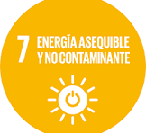
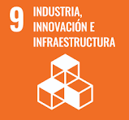
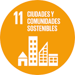
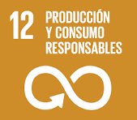

Como aporta: Promueve el uso de energías renovables y la generación descentralizada de electricidad. Reduce la dependencia de fuentes fósiles al aprovechar una fuente de energía limpia. fomenta la eficiencia energética en espacios urbanos y deportivos. Fomenta l'eficiència energètica a espais urbans i esportius.

Como aporta: Impulsa la innovación tecnológica mediante el desarrollo de sensores y sistemas de conversión energética. Potencia la investigación y el desarrollo (I+D) en materiales inteligentes y energías alternativas. Crea oportunidades para nuevas industrias sostenibles.

Como aporta: Mejora la infraestructura urbana inteligente y sostenible. Convierte espacios deportivos o de tráfico en entornos energéticamente activos y autosuficientes. Favorece la resiliencia urbana y la innovación tecnológica en el mobiliario y servicios públicos.

Como aporta: permite aprovechar un recurso que normalmente se desperdicia (la energía de las huellas), reduciendo el desperdicio energético. Fomenta una economía circular basada en el aprovechamiento eficiente de los recursos.